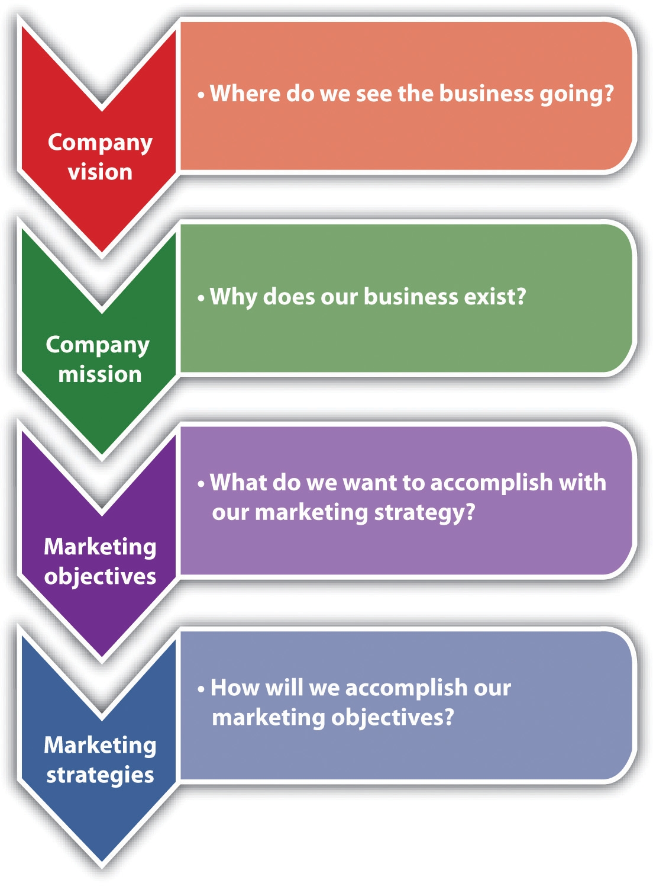

The focus of this text is on the management of the small business that is up and running as opposed to a start-up operation. As a result, the considerations of marketing strategy are twofold: (1) to modify or tweak marketing efforts already in place and (2) to add products or services as the business evolves. In some instances, it may be appropriate and desirable for a small business to backfit its marketing activities into a complete marketing strategy framework.
The marketing strategy process consists of several components (Figure 7.1 "Marketing Strategy Process"). Each component should be considered and designed carefully: company vision, company mission, marketing objectives, and the marketing strategy itself.
Figure 7.1 Marketing Strategy Process
Source: Susan I. Reid, “How to Write a Great Business Vision Statement,” Alkamae, February 23, 2009, accessed December 2, 2011, http://alkamae.com/content.php?id=285; “Marketing Plan: Marketing Objectives and Strategies,” Small Business Notes, accessed December 2, 2011, http://www.smallbusinessnotes.com/starting-a-business/marketing-plan-marketing-objectives-and-strategies.html.
It is awfully important to know what is and what is not your business.Jay Ebben, “Developing Effective Vision and Mission Statements,” Inc., February 1, 2005, accessed December 1, 2011, www.inc.com/resources/startup/articles/20050201/missionstatement.html.
Gertrude Stein
The vision statementA document that articulates the long-term purpose and idealized notion of what the business wishes to become. tries to articulate the long-term purpose and idealized notion of what a business hopes to become. (Where do we see the business going?) It should coincide with the founder’s goals for the business, stating what the founder ultimately envisions the business to be.Jay Ebben, “Developing Effective Vision and Mission Statements,” Inc., February 1, 2005, accessed December 1, 2011, www.inc.com/resources/startup/articles/20050201/missionstatement.html. The mission statementA document that articulates the fundamental nature of the business. It should address what business the company is in, the company’s potential customers, and how customer value will be provided. looks to articulate the more fundamental nature of a business (i.e., why the business exists). It should be developed from the customer’s perspective, be consistent with the vision, and answer three questions: What do we do? How do we do it? And for whom do we do it?
Both the vision statement and the mission statement must be developed carefully because they “provide direction for a new or small firm, without which it is difficult to develop a cohesive plan. In turn, this allows the firm to pursue activities that lead the organization forward and avoid devoting resources to activities that do not.”Jay Ebben, “Developing Effective Vision and Mission Statements,” Inc., February 1, 2005, accessed December 1, 2011, www.inc.com/resources/startup/articles/20050201/missionstatement.html. Although input may be sought from others, the ultimate responsibility for the company vision and mission statements rests with the small business owner. The following are examples of both statements:
Marketing objectives are what a company wants to accomplish with its marketing. They lay the groundwork for formulating the marketing strategy. Although formulated in a variety of ways, their achievement should lead to sales. The creation of marketing objectives is one of the most critical steps a business will take. The company needs to know, as precisely as possible, what it wants to achieve before allocating any resources to the marketing effort.
Marketing objectives should be SMART: specific, measurable, achievable, realistic, and time-based (i.e., have a stated time frame for achievement). It has been recommended that small businesses limit the number of objectives to a maximum of three or four. If you have fewer than two objectives, you aren’t growing your business like you should be in order to keep up with the market. Having more than four objectives will divide your attention, and this may result in a lackluster showing on each objective and no big successes.“How to Choose Marketing Plan Objectives,” accessed January 24, 2012, www.hellomarketing.biz/planning-strategy/marketing-plan-objectives.php. If a small business has multiple marketing objectives, they will have to be evaluated to ensure that they do not conflict with each other. The company should also determine if it has the resources necessary to accomplish all its objectives.Adapted from “Marketing Plan: Marketing Objectives and Strategies,” Small Business Notes, accessed December 1, 2011, www.smallbusinessnotes.com/starting -a-business/marketing-plan-marketing-objectives-and-strategies.html.
For small businesses that already have, or are looking to have, a web presence and sell their products or services online, e-marketingInformation technology applied to traditional marketing. objectives must be included with all other marketing objectives. E-marketing is defined as “the result of information technology applied to traditional marketing.”Judy Strauss and Raymond Frost, E-Marketing (Upper Saddle River, NJ: Pearson Prentice Hall, 2009), 6. The issues of concern and focus will be the same as for traditional marketing objectives. The difference is in the venue (i.e., online versus onground). Examples of e-marketing objectives are as follows: to establish a direct source of revenue from orders or advertising space; improve sales by building an image for the company’s product, brand, and/or company; lower operating costs;Bobette Kyle, “Marketing Objectives for Your Website,” WebSiteMarketingPlan.com, December 10, 2010, accessed December 1, 2011, www.websitemarketingplan.com/marketing_management/marketingobjectivesarticle.htm. provide a strong positive customer experience; and contribute to brand loyalty. The ultimate objective, however, will be “the comprehensive integration of e-marketing and traditional marketing to create seamless strategies and tactics.”Judy Strauss and Raymond Frost, E-Marketing (Upper Saddle River, NJ: Pearson Prentice Hall, 2009), 5.
With its focus being on achieving the marketing objectives, marketing strategy involves segmenting the market and selecting a target or targets, making differentiation and positioning decisions, and designing the marketing mix. The design of the product (one of the four Ps) will include design of the company website. Differentiation refers to a company’s efforts to set its product or service apart from the competition, and positioning is placing the brand (whether store, product, or service) in the consumer’s mind in relation to other competing products based on product traits and benefits that are relevant to the consumer.Dana-Nicoleta Lascu and Kenneth E. Clow, Essentials of Marketing (Mason, OH: Atomic Dog Publishing, 2007), 179. These steps are discussed in Section 7.3 "Segmentation and the Target Market" through Section 7.8 "Marketing Strategy and Promotion". It has been said that “in some cases strategy just happens because a market and a product find each other and grow organically. However, small businesses that understand the power of an overarching marketing strategy, filtered and infused in every tactical process, will usually enjoy greater success.”John Jantsch, “The Cycle of Strategy,” Duct Tape Marketing, March 29, 2010, accessed December 1, 2011, www.ducttapemarketing.com/blog/2010/03/29/the-cycle-of -strategy.